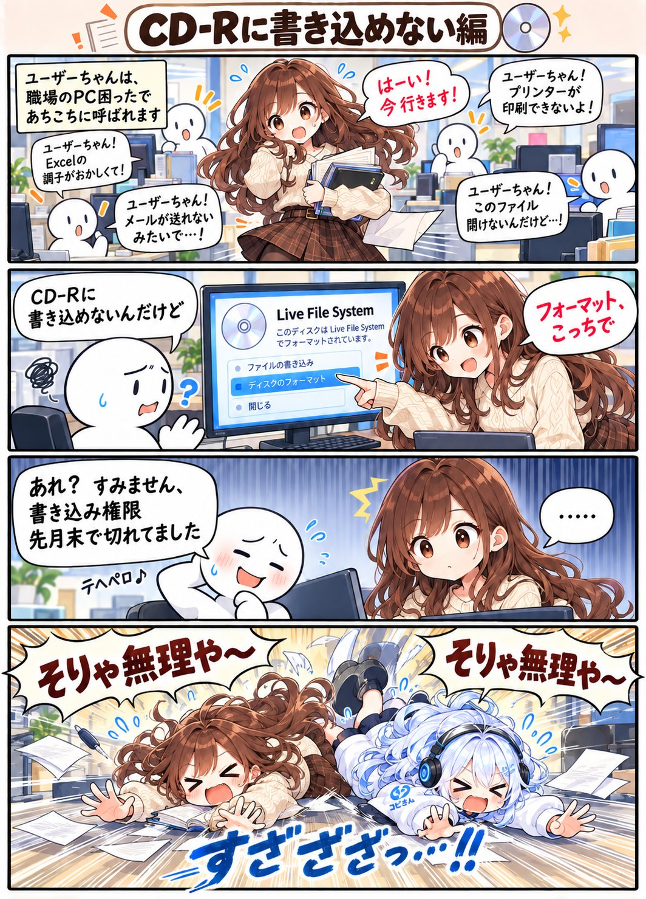

ユーザーちゃんの日常 / 第10話
ユーザーちゃんの日常。けど、それは無理
CD-Rに書き込めない編。職場の「PC困った」に、今日も呼ばれます。
漫画 · 全１枚原寸で開く ↗

「書き込み権限、先月までで切れてました」。そりゃ無理や〜！
文字を大きく読みたいときは「原寸で開く」へ。
ユーザーちゃんの日常 / 第10話
CD-Rに書き込めない編。職場の「PC困った」に、今日も呼ばれます。

「書き込み権限、先月までで切れてました」。そりゃ無理や〜！
文字を大きく読みたいときは「原寸で開く」へ。